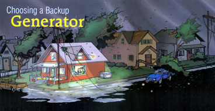
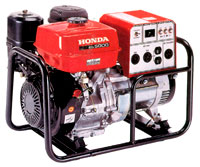
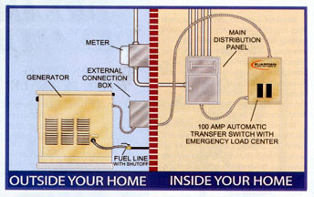
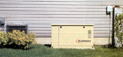

Power failures can be a real pain-and downright dangerous-if you're not prepared. At the very least, blackouts disable heating and air-conditioning systems, freezers, refrigerators, water pumps and lighting. If the power outage lasts for any length of time, your home can become uncomfortable and possibly uninhabitable: Your water pipes may freeze and burst, the food in your freezer may thaw and spoil, or your sump pump may fail, flooding your basement. Any of these events can quickly become expensive. If a blizzard blocks roads and you're snowed-in during subzero temperatures, grid failure can even be life-threatening.
But you can make your home blackout-proof. Installing a solar PV system or a wind generator is the greenest option, letting you cut your ties to the fossil fuels and nuclear power that produce nearly all grid-based electricity. (For more on these options, see "Go Solar, Be Secure" at http://www.motherearthnews.com )
Another possibility is buying a backup generator, usually powered by a conventional internal combustion engine. Used with or without renewable energy, a backup generator can eliminate the headaches of long-term power outages.
In 1985, I lived at the tail end of along electric distribution line in rural Vermont. One January night, a severe ice storm hit and the electricity went off, as usual. But this time it did not return hours later, or even the next day. The morning after, I surveyed the damage outside-our electric lines were lying on the ground across the driveway and the power line right-of-way had disappeared in a tangle of bent, ice-coated trees. The utility company's crews were overwhelmed by the damage. We went without electric service for a week.
Fortunately, we had a woodstove and a backup generator. The generator powered a few lights, the refrigerator and a television. Most importantly, it kept the heated, automatic waterers for the 75 sheep in the barn from freezing.
It's hard to appreciate just how valuable a generator can be until you've lived through a lengthy power outage without one. Many people wish for backup power only when it's too late. Generators quickly sell out before and during emergencies, so don't wait until the next major power failure to consider buying one.
The two main types of residential generators are portable and permanent standby. If you plan to power a few lights, your refrigerator and a furnace, a less expensive portable generator may provide enough power. If you intend to run your lights and furnace-along with a well pump, a freezer and other major appliances-you will need a permanent standby model.
Typically such a generator is mounted on a concrete pad and connected directly to your home's electrical circuits via an automatic transfer switch that starts the generator during a blackout and shuts it off when grid power returns (more on transfer switches later).
If your home is grid-connected, you don't need to spend a lot of money on a backup generator to weather the occasional power outage because typically, backup generators are used less than 50 hours a year. Large standby generators can cost several thousand dollars, but smaller portable models will power basic necessities and cost $1,000 or less, some as little as $400. Even a less expensive generator will run at least 500 hours, giving you about 10 years of service. But if you plan to install solar or wind power, or you live in a rural area on a distribution line that suffers frequent power outages, you will need a larger capacity generator. Those that back up renewable energy systems operate between 100 and 200 hours a year. The load is heavier because they run your household and recharge your renewable energy system's batteries at the same time.
Regardless of what size generator you need, it is important to shop around and do your research-prices vary greatly from brand to brand and, according to Consumer Reports, some models deliver less power than they promise. Best-buy-rated models were the Generac 5500 WheelHouse and the Troy-Bilt 5550 (each $650; www.consumerreports.org ).
SIZING YOUR GENERATOR
It's important to match the size of your generator to your electrical needs. An undersized generator won't last long and can destroy motors and other electrical equipment that require more current than the generator can deliver. Generators are rated by their maximum electrical power output in kilowatts. (A kilowatt equals 1,000 watts, or enough energy to light 10 100-watt light bulbs.) For greatest efficiency and to prolong your generator's life, operate it at no more than 75 percent of its capacity.
To calculate the generator size you need, total the wattage of the appliances and other items you want to simultaneously power and then double that number. If you plan to power several appliances, you need to account for their starting or "surge" requirements. You can find this information on the appliance or in its manual.
Most homeowners will need a 5-kilowatt portable generator to power a heating system and a few other essentials (a furnace uses from about 1,800 watts to 3,500 watts, depending on the type of furnace and the size of the house). A generator of this size will cost at least $600 and, when running at 50-percent load, wlll consume about half a gallon of gasoline per hour. Larger portable generators use more fuel and cost up to $3,000. Permanent standby generators with automatic operation generally cost between $2,200 and $10,000.
Controlled Power Company of White River Junction, Vermont, sells permanent standby generators for residential use in northern New England. According to Timothy Tobin, the company's president, the demand for larger units is growing. "Fifteen years ago, the standard home generator was in the 5-kilowatt range, but today the most popular size is 12 kilowatts, and we've actually sold some up to 70 kilowatts."
GENERATOR FUELS
Generators run on a wide variety of fuels, including gasoline, diesel, biodiesel, natural gas, propane and-in the case of some fuel cells-hydrogen. Most of the less-expensive models use gasoline. Your choice of fuel and type of generator should be determined by how often you will use the generator and the fuels available in your area.
If you live in a grid-connected house and power failures are infrequent, a gasoline-fueled generator may be best. The challenge is safely storing the gasoline-neither your house or your garage are considered safe because of the fire hazard. A small, fireproof tool shed in the back yard is probably the best strategy. Gasoline has an average shelf life of about six months, so refresh your supply regularly. How much fuel to store, whether gasoline, diesel or biodiesel, depends on the size of your generator-store a useful amount, but not so much that you are constantly replacing large quantities.
If you already have natural gas service to your house, or if propane is readily available in your area, consider a natural gas- or propane-fueled generator. They tend to last longer and burn cleaner than their gasoline counterparts, though they still are powered by fossil fuels. Recently, more people are opting to use natural gas: "The most popular models in the 10- to 12kilowatt range these days are natural gas, followed by propane," says Jim Flowers, director of marketing-residential products at Cummins Power/Onan Generators in Minneapolis, Minnesota.
If your electrical loads are fairly heavy and you live in an area where blackouts are frequent, consider a generator that runs on diesel or biodiesel fuel. Diesel-powered generators are more powerful and generally last longer than gasoline units, but they tend to be more difficult to start in cold weather. This is especially true in northern regions where winters can be brutally cold and utility lines tend to ice over-and come down-with regularity. Keep in mind that diesel fuel has a shelf life of about a year.
Biodiesel, a greener alternative, is made from vegetable oil or recycled restaurant cooking oils. It produces significantly less emissions, is safer to store and has better lubricating properties than petroleum-based diesel. Numerous businesses and municipalities, and some homeowners, use biodiesel fuel or biodiesel blends (a mixture of diesel and biodiesel) to power their diesel generators or furnaces.
In cold weather, full-strength biodiesel (B100) will gel, so it needs to be stored above 32 degrees. Lower percentage biodiesel blends (B20 or less) aren't as prone to freezing. Biodiesel's shelf life is similar to that of gasoline-about six months. Before you use biodiesel, ask your generator's manufacturer if your engine contains any natural or butyl rubber components that could be damaged by biodiesel; generally, diesel generators manufactured after 1993 do not have these parts. Also, make sure using biodiesel will not void your generator's warranty.
GENERATOR COMPONENTS
Most generators have four primary parts: an engine that provides the mechanical energy; an alternator that converts the mechanical energy into electricity; an output/control panel that houses electrical outlets, circuit breakers and switches; and a frame to hold all the components together. In the case of a gasoline- or diesel-powered generator, a fuel tank is attached. This combined unit is referred to as a generator set or "genset."
The most common residential backup gensets use gasoline engines, but this category includes a wide range of generator options. Cheaper generators have single-cylinder, air-cooled engines. Higher-quality units have multiple-cylinder, liquid-cooled engines that provide a steadier operating temperature and substantially less engine noise due to the sound-reducing qualities of the water jacket. An engine that has overhead valves (OHV) is easier to start, runs quieter, lasts longer and produces less emissions than non-OHV engines.
Unfortunately, OHV engines cost more. Another technical issue to consider is whether the engine has a cast iron sleeve (CIS) in the cylinder. This sleeve reduces the friction that causes cylinder wear, prolonging the engine's life. Both these features (OHV and CIS) are important if your generator will b e running frequently or for long periods, especially if you plan to use it to back up a renewable energy system.
Engine speed is another factor that relates to how long a genset will last. Aircooled engines that run at 1,800 revolutions per minute (rpm) normally last longer than those that operate at 3,600 rpm. But some manufacturers offer overhead camshaft, liquid-cooled engines that run at 3,600 rpm and that will outlast most 1,800-rpm models. To find the best buy and the best engine to meet your needs, do your homework and ask a lot of questions.
Because alternators are what generate electricity in the engine, it's equally important to choose one that is built to last. All-metal construction is preferable to plastic, which can crack or warp, causing the internal parts to wear or break. Alternators that use ball bearings rather than needle bearings in their construction should have a longer life span, too. Another important feature to look for is a "brushless" design, which requires less maintenance and generates "cleaner" power for electronic devices such as computers.
NOISE ISSUES
Generators, especially gasoline-fueled models, make major noise. Generally, the cheaper the generator, the louder it will operate. Natural gas and propane generators are much quieter. One way to minimize the noise level is to buy a more expensive generator with a water-cooled engine and a good muffler. An alternative approach is to locate your generator away from your home, but this can cause problems with long power cords and voltage drop. A better option is to place your generator in a small, soundproof shed. If you follow this approach, be sure to provide adequate ventilation (which will partly negate the soundproof strategy). Listen to any generator before you buy it. You may decide on the spot that the extra quiet of a watercooled unit is worth the cost.
CONNECTING YOUR GENERATOR
If you are just going to power one or two appliances or a few lights, you may be able to use an extension cord to connect them to your generator. Be sure to use a heavy-duty cord that won't cause excessive voltage drop. Saving a few dollars by buying a cheap extension cord for an expensive genset is foolish and potentially dangerous-an overheated extension cord is a fire hazard. Dragging extension cords out to your generator in the middle of a stormy night can be a real pain, too, but it is the cheapest approach.
A much safer but more expensive approach is a transfer switch. If you plan to back up appliances that can't be unplugged from your home's electrical circuits -such as your furnace or boiler-or you want to power all your household lighting, then you must have a transfer switch, also known as a bypass switch. These special electrical panels work somewhat like your main circuit breaker panel and are available in manual and automatic models. Many city and state electrical codes require a transfer switch and you may need a permit or inspection to have one installed.
A basic manual transfer switch costs about $200 and should be installed by a licensed electrician. The installation will cost about $300 (more if extensive rewiring is needed). Your electrician will connect the circuits you want to power. In the event of a power failure, you plug your generator into the panel with a special power cord and switch the circuits from utility power to your generator. When the blackout is over, you switch the circuits back to utility power. This eliminates having both power sources on the selected circuits at the same time and the possibility of sending electricity to the grid lines when utility crews are working on them. A transfer switch also will protect your generator from surge damage when grid power is restored.
An automatic transfer switch accomplishes the same tasks as a manual model, except, as its name implies, it functions automatically. Automatic transfer switches cost at least $600 and work with generators that turn on when the grid goes down and shut off when electricity resumes. If your stand by- generator is going to power your entire house, then the transfer switch needs the same rating as your main breaker panel. If you only want to power certain circuits, a smaller-capacity transfer switch will work fine. Finally, if you have a natural gas- or propane-powered generator, you need to have a licensed plumber or pipe-fitter install the gas connections. "That way, you know it's been done correctly and that it will meet all the codes," Flowers says.
Planning ahead for blackout emergencies is a wise strategy because most energy experts predict even more problems with grid reliability in the future. Get your backup generator ready now and transform your next power outage from an unpleasant surprise (or worse) into a minor inconvenience. Or, combine your backup generator with a renewable energy system, and declare your total independence from the grid!
Mother Earth News
|
 Courtesy American Honda Portable generators, such as this Honda EG 5000, are a cheaper option than permanent standby models. This generator's engine runs on gasoline and is designed with overhead valves, a feature that helps reduce emissions and noise. |
 Courtesy Generac Power Systems (2) A permanent standby generator can be an inconspicuous addition to your house. |
 |
|
 |
|
|